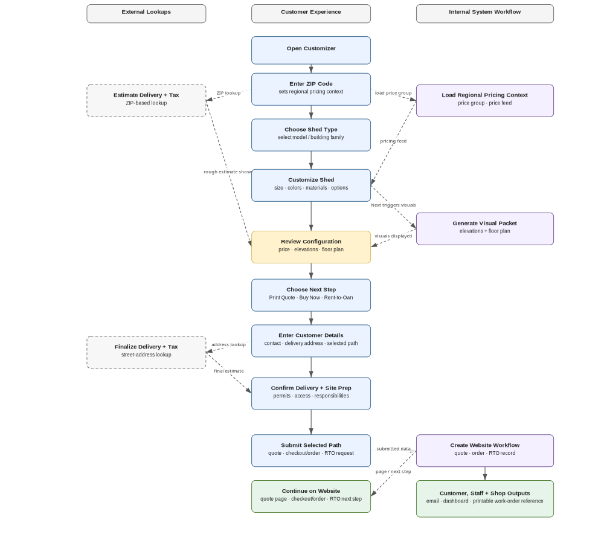
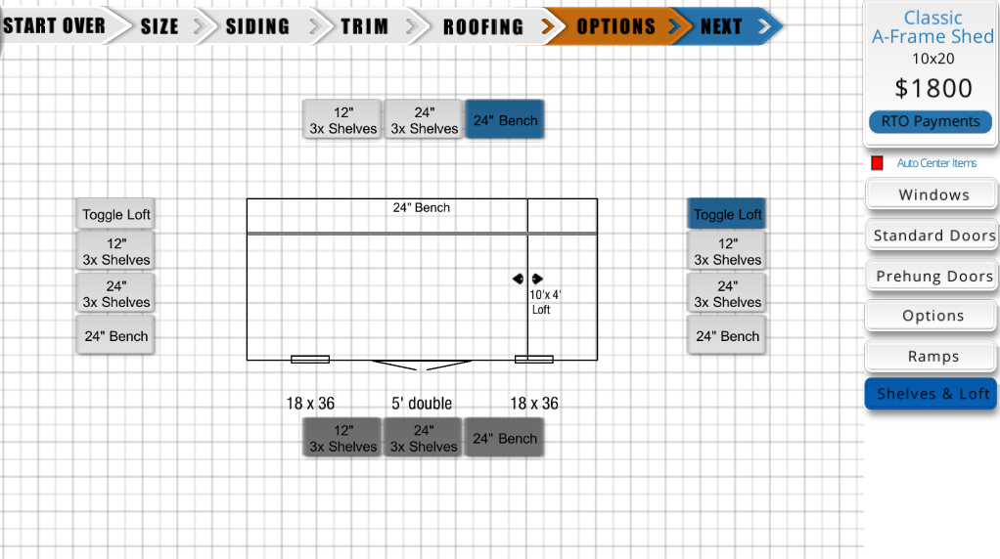
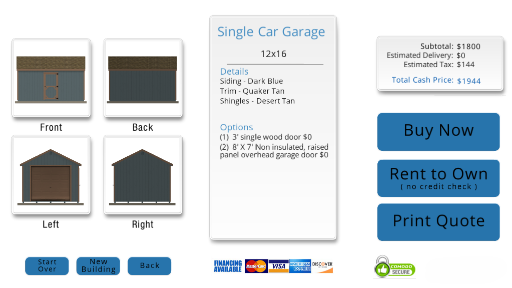
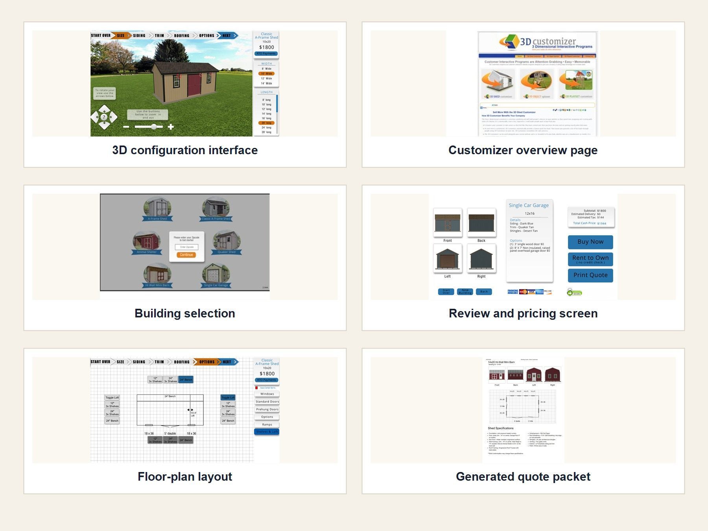
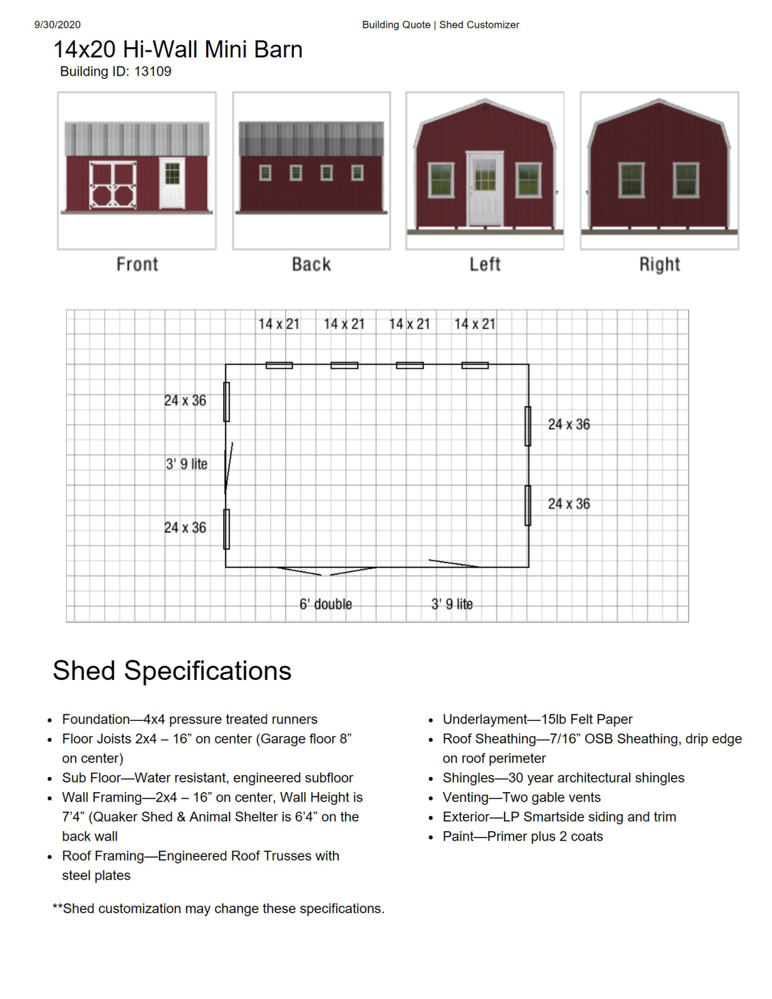
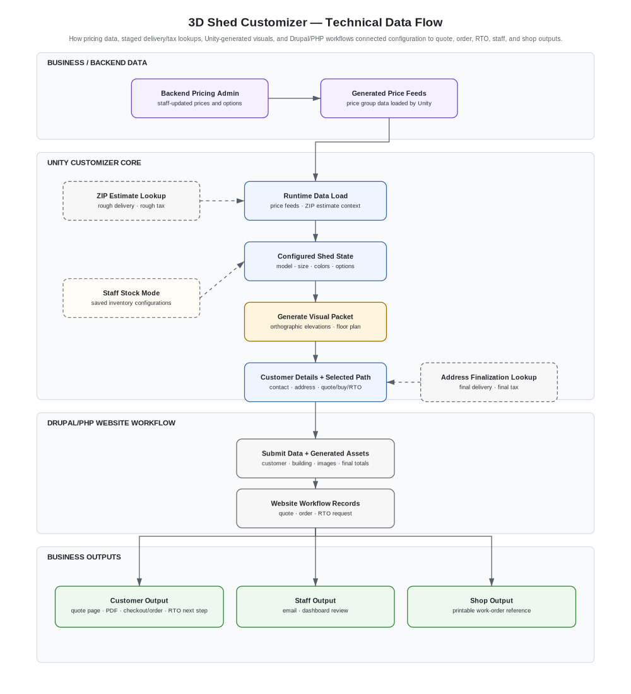

Commercial 3D Shed Customizer
I built a production Unity/WebGL configurator and custom CPQ system that turned custom shed choices into live pricing, generated visuals, quote and order documents, rent-to-own paths, and staff production support.
I developed the configurator beginning in 2012, then acquired and ran it independently as 3D Customizer, in production through 2022. Over that lifecycle it supported thousands of quote, order, and rent-to-own records tied to millions of dollars in shed sales.
Customers and sales staff could design the building visually, review pricing, generate elevations and floor plans, and continue into quote, purchase, or rent-to-own paths.

A custom shed sale has a lot of moving parts.
Customers are not just choosing a model from a catalog. They are choosing the building style, size, colors, roof, doors, windows, interior options, delivery details, and payment path. Each choice affects what the customer sees, what the building costs, and what staff need for the next step.
The configurator brought those choices into one guided sales system that supported years of quote, order, and rent-to-own activity. Users could design the shed visually, review the price and details, and move forward from the same configured building.

Configuration walkthrough
This reconstructed walkthrough shows how the system moved from shed selection to visual customization, generated review documents, and customer information for quote or order follow-up.
My role
I owned the custom configurator and CPQ layer and supported the system over its production lifecycle. That included Unity behavior, product-option logic, 3D building families, UI implementation, generated elevations and floor plans, live pricing feeds, custom PHP endpoints, and quote, order, rent-to-own, and PDF outputs.
I worked directly with the business owner and sales staff to turn customer-reported issues, product changes, pricing needs, and sales feedback into implementation decisions and product updates.
The base Drupal setup, hosting, shopping-cart infrastructure, and visual UI design were handled separately. My work was the custom product-system layer that connected the visual configurator to pricing, documents, business records, staff tools, and customer follow-up.
How the configurator worked
The configurator kept the customer's shed choices connected as one working configuration. Style, size, colors, materials, doors, windows, ramps, and exterior options updated the 3D building view.
Interior/layout options used a separate plan-view display for shelves, lofts, benches, and related options, giving the customer and sales staff a clearer layout reference.
That same configured shed carried into the review screen, where the system showed generated elevations, selected options, pricing, and Buy Now, Rent to Own, or Print Quote paths.
In practice, the configurator functioned as a sales-facing custom CPQ system: customers and staff could configure the shed visually, see live pricing, review drawings and selected options, and move into quote, purchase, or rent-to-own paths from the same configured building.


Business outputs for customers, sales, and shop staff
The configurator did more than show a finished shed on screen. It generated customer review documents, quote and order records, production reference materials, and shop reference details that helped move the sale from configuration into business use.
Those documents and records included front, back, left, and right elevations; a floor-plan drawing; building details; selected options; pricing information; a building ID; and delivery/site-preparation guidance. The result was a configured shed record that could move beyond the app into customer follow-up, quoting, order review, and shop reference.


Custom CPQ integration: from visual configuration to business records
The configurator was more than a 3D design tool. It kept the customer's shed choices connected to product rules, live pricing, generated drawings, quote and order records, rent-to-own paths, and staff review.
I built the custom Unity-to-Drupal/PHP integration layer, including endpoints and paths for quotes, purchases, rent-to-own, PDF generation, staff review, and shop reference materials.
That connection turned a visual shed design into pricing, documents, business records, customer follow-up, and staff production reference materials.

What I would build differently today
The customizer worked as a real business tool, but maintaining it over time taught me that maintainability is not just a code issue. It is also a documentation, communication, and business-knowledge issue.
If I rebuilt it today, I would make more of the system's product rules, pricing assumptions, sales-process decisions, and business logic explicit in documentation and tests. That instinct, making every decision explicit, locatable, and testable, is exactly what I now apply to AI output in my Governed AI Workflows project: the same discipline, a model instead of a pricing engine.
Today, I would pair the same business goal with stronger source control, clearer issue tracking, code review, practical automated testing, and better records of technical and business decisions. The business goal would stay the same: connect customers and staff from visual configuration to quote, order, and shop reference. The foundation would be cleaner, better documented, and easier to maintain.
Related work
The shed customizer shows one of the main patterns in my work: turning configurable physical products into product configurators, custom CPQ systems, visual sales tools, and business software.